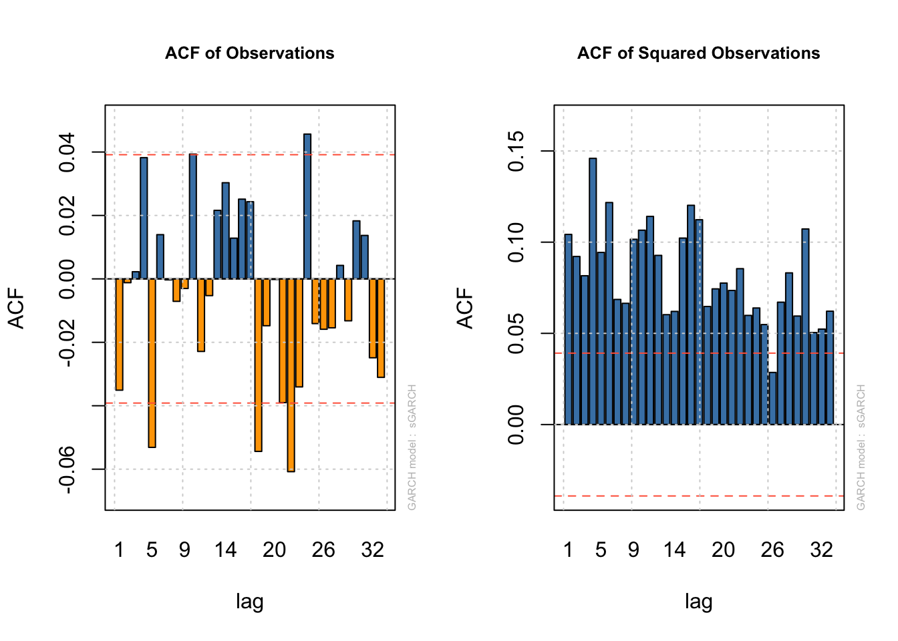
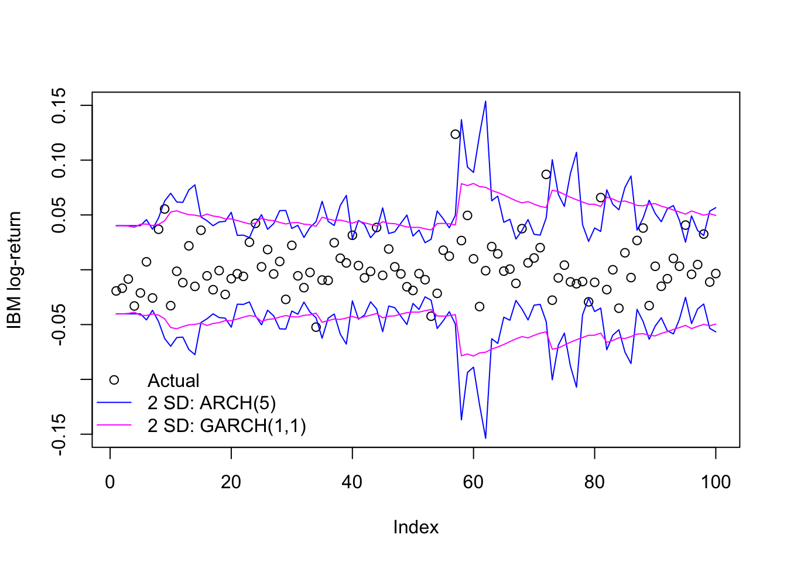
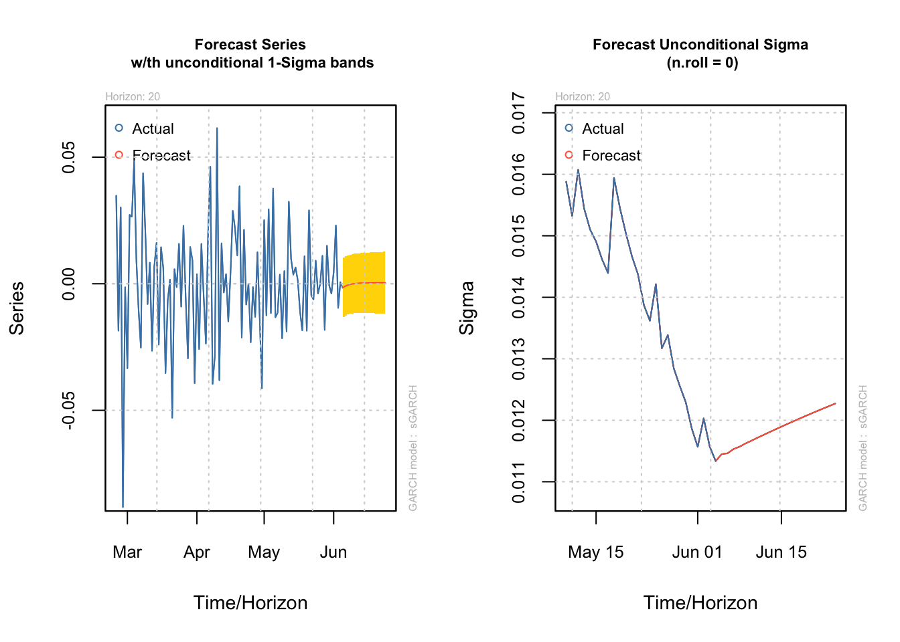

library(rugarch)GARCH models and kin
Robert Engle won a Nobel prize for coming up with ARCH models, but they aren’t widely used anymore. His doctoral student, Bollerslev, extended the original idea into GARCH (Generalized Autoregressive Conditional Heteroskedasticity), and with a few exceptions this newer class of model is generally found to be superior in describing conditional heteroskedasticity.
Motivation and definition
Let’s return briefly to the model we fit to the IBM data on the ARCH page. It used five lagged residuals to estimate the variance of the current residual. However, those five parameters might seem both (1) too many for capturing such a simple idea, as well as (2) somewhat arbitrary. Even if an AIC test suggested five lags was optimal, would we really believe that the past five days of IBM returns offer useful information about current volatility but that the sixth lag does not?
We have two sources of strong evidence that the sixth lag could be an informative addition. First we have common diagnostic plots, which check the ACF of the residuals and separately the squared residuals. Neither plot should show significant autocorrelation, and if we do see autocorrelation in the squared residuals the conclusion would be that need to incorporate more past information:
Code
data(dji30ret)
ibm <- dji30ret$IBM[rownames(dji30ret)>'1999-01-31' & rownames(dji30ret)<'2009-02-01']
dates <- rownames(dji30ret)[rownames(dji30ret)>'1999-01-31' & rownames(dji30ret)<'2009-02-01']
ibm.train <- ibm[-(length(ibm) - 9:0)]
ibm.arch5 <- ugarchfit(spec=ugarchspec(variance.model=list(model='sGARCH',
garchOrder=c(5,0)),
mean.model=list(armaOrder=c(0,0))),
data=ibm.train)
par(mfrow=c(1,2))
plot(ibm.arch5,which=4)
plot(ibm.arch5,which=5)
The other piece of evidence would come from directly fitting a larger model and comparing AICs or performing a likelihood-based test of whether the additional terms are more helpful. At the end of the day, we need not wonder – an ARCH(6) term would also be significant. In fact, we could create an ARCH(11) model if we want!
Code
ibm.arch11 <- ugarchfit(spec=ugarchspec(variance.model=list(model='sGARCH',
garchOrder=c(11,0)),
mean.model=list(armaOrder=c(0,0))),
data=ibm.train)
print(round(ibm.arch11@fit$robust.matcoef,3)) Estimate Std. Error t value Pr(>|t|)
mu 0.000 0.000 0.771 0.441
omega 0.000 0.000 5.135 0.000
alpha1 0.166 0.055 3.029 0.002
alpha2 0.087 0.025 3.460 0.001
alpha3 0.031 0.015 2.124 0.034
alpha4 0.176 0.064 2.756 0.006
alpha5 0.048 0.036 1.324 0.186
alpha6 0.110 0.055 1.992 0.046
alpha7 0.046 0.055 0.830 0.407
alpha8 0.031 0.025 1.208 0.227
alpha9 0.067 0.024 2.768 0.006
alpha10 0.091 0.042 2.169 0.030
alpha11 0.147 0.054 2.738 0.006At the daily frequency, high- and low-volatility regimes can last for dozens of observations, and R finds very similar variance-prediction power from many past (squared) residuals.
We do not want to fit ARCH(11) models: even if they accurately forecast future variance periods, they would not be parsimonious, and the details of these coefficients may suggest ridiculous ideas. There should be a better, simpler way forward.
Recall that an infinite-order AR model can be represented as a finite-order MA model and vice versa. For example, consider an MA(1) model with parameter \(\theta \lt 1:\)
\[\begin{aligned} \textrm{MA}(1) : \quad y_t &= \omega_t + \theta \omega_{t-1} \longrightarrow \\ \omega_t &= y_t - \theta \omega_{t-1} \\ &= y_t - \theta(y_{t-1} - \theta \omega_{t - 2}) \\ &= y_t - \theta(y_{t-1} - \theta (y_{t-2} - \theta \omega_{t - 3})) \\ &\ldots \\ \omega_t &= \sum_{p=0}^\infty -\theta^p y_{t-p} \quad : \textrm{AR}(\infty)\end{aligned}\]
This ARMA process is stationary and identical whether we represent it as an MA(1) or an AR(\(\infty\)) process, but the first way requires only one parameter while the second contains infinite parameters.
We can harness this idea to provide our ARCH model with a long “memory” while only estimating one or two parameters. We will add MA-style terms which use the past error variances of \(\boldsymbol{Y}\) alongside the AR-style terms which use the past errors of \(\boldsymbol{Y}\):
Note
Let \(\boldsymbol{Y}\) be a time series observed at regular time periods \(T = \{1,2,\ldots,n\}\) and following a linear model such that:
\[Y_t = \mu(\boldsymbol{X}_t) + \varepsilon_t\]
Where \(\mu(\cdot)\) is a linear mean function, \(\boldsymbol{X}_t\) is a vector of predictive features at time index \(t\) (such as past lags of \(Y\), exogenous predictors, or dummy-coded indicator functions), and \(\varepsilon_t\) is a heteroskedastic error process. Now assume that:
\[\varepsilon_t = \sigma_t \omega_t\]
Where \(\sigma_t\) is some constant which scales \(\omega_t\), a mean zero white noise process with independent and identically distributed (IID) innovations. Further assume that:
\[\sigma^2_t = \mathbb{E}[\varepsilon_t^2] = a_0 + \sum_{i=1}^q a_i \varepsilon_{t-i}^2 + \sum_{j=1}^p b_j \sigma^2_{t-j}\]
Where \(a_0 \ge 0\), and \(a_1, \ldots, a_q, b_1, \ldots, b_p \gt 0\).
Then we say that \(\sigma^2_t = \mathbb{E}[\varepsilon_t^2]\) follows a generalized autoregressive conditional heteroskedasticity (GARCH) model with orders q,p.1
How GARCH models “see” conditional heteroskedasticity
The ARCH terms we’ve used so far are extremely short-term: an ARCH(1) model uses only the previous residual alongside a long-term scaling factor to predict the size of the current residual. This short-term focus can make the volatility forecasts very noisy. Adding even a single GARCH term effectively gives us a second set of exponentially-damped ARCH weights which can extract information from a longer time horizon.
Consider the GARCH(1,1) model:
\[\sigma^2_t = a_0 + a_1 \varepsilon_{t-1}^2 + b_1 \sigma^2_{t-1}\]
Note that we could use substitution as we did with the MA(1) model above to show that the last term can be expanded into an infinite geometric series. But instead, let’s try something else: assume that \(\boldsymbol{Y}\) is stationary and so has a single long-term (unconditional) variance \(\bar{\sigma}^2\). Now we may assume some constant \(a'_0\) such that \(a_0 = a'_0 \cdot \bar{\sigma}^2\). From here we may rewrite the equation above:
\[\sigma^2_t = a'_0 \bar{\sigma}^2 + a_1 \varepsilon_{t-1}^2 + b_1 \sigma^2_{t-1}\]
In other words, a GARCH(1,1) model claims that the conditional variance of \(Y_t\) is a weighted average of three elements:
The unconditional variance of \(\boldsymbol{Y}\), as proxied by the constant term \(a_0\) (long-term behavior)
The size of the most recent squared residual (short-term behavior)
The forecasted size of the most recent squared residual, based on a damped set of past observations (intermediate-term behavior).
We can see some of this at work by fitting a GARCH(1,1) model to the IBM data seen previously.
Code
ibm.garch11 <- ugarchfit(spec=ugarchspec(variance.model=list(model='sGARCH',
garchOrder=c(1,1)),
mean.model=list(armaOrder=c(0,0))),
data=ibm.train)
print(round(ibm.garch11@fit$robust.matcoef,3)) Estimate Std. Error t value Pr(>|t|)
mu 0.000 0.001 0.249 0.803
omega 0.000 0.000 0.040 0.968
alpha1 0.076 0.559 0.135 0.892
beta1 0.922 0.552 1.671 0.095As we might expect, the remaining ARCH term (alpha1) does not carry much weight. Instead, the new GARCH term (beta1) has a large coefficient indicating a slow decay of information over many past lags. We can also see it in a side-by-side comparison of the in-sample predicted volatility for these two models:
Code
plot(ibm.train[1:100],ylab='IBM log-return',ylim=c(-0.15,0.15),type='p')
matplot(1:100,2*cbind(-ibm.arch5@fit$sigma,-ibm.garch11@fit$sigma,
ibm.arch5@fit$sigma,ibm.garch11@fit$sigma)[1:100,],
type='l',add=TRUE,col=c('#0000ff','#ff00ff'),lty=1)
legend(x='bottomleft',legend=c('Actual','2 SD: ARCH(5)','2 SD: GARCH(1,1)'),
pch=c(1,NA,NA),lwd=c(NA,1,1),col=c('#000000','#0000ff','#ff00ff'),
bty='n')
When to use or not use a GARCH(1,1) model
GARCH(1,1) is almost a default choice at this point when fitting ARCH/GARCH models to a new dataset. Its combination of short- and intermediate-term dependence usually provides an adequate fit to many datasets
The short answer is to use it when it fits and don’t when it doesn’t. By this point we have our choice of information criteria, test statistics, residual analysis, etc. to help us make that decision. However, two generalities bear mention:
A GARCH(q,2) process may fit large datasets better in cases where some information decays quickly and other information decays slowly, such short-term oil price/supply shocks and long-term demand volatility. The two different GARCH terms will allow for a very complex decay of volatility information over time.2
A GARCH(q,0) process — i.e. an ARCH(q) process — may fit some datasets better in which the volatility is very abrupt, perhaps even captured fully by ARCH(1) or ARCH(2). In these cases, any GARCH terms will dilute the immediate volatility effects of the ARCH terms. Examples might include monthly index returns or weekly insurance claims.
ARMA-GARCH
One popular combination for univariate time series models is to fit the mean process with an ARMA model and the variance process with a GARCH model. These models are called ARMA-GARCH, and allow both mean and variance to vary with their past values (or past shocks) in symmetrical ways.
For example, even though single-ticker stock prices are generally believed to behave as a random walk, over a long time horizon their changing “alpha” (their excess return over the market) can create ARMA-like dependency. We can test this out by fitting 2000 daily Exxon Mobil stock returns (~8 years) as a function of (1) a static linear predictor (the S&P 500 returns), (2) an ARMA(1,1) model for the mean, and (3) a GARCH(1,2) model for the variance, which we would expect to be heteroskedastic over a long time period:
Code
data(sp500ret)
stocks <- merge(dji30ret,sp500ret,by=0)[2001:4000,]
xom.armagarch <- ugarchfit(spec=ugarchspec(variance.model=list(model='sGARCH',
garchOrder=c(1,2)),mean.model=list(armaOrder=c(1,1),
external.regressors=cbind(stocks$SP500RET))),
data=stocks$XOM,out.sample=20)
print(round(xom.armagarch@fit$robust.matcoef,4)) Estimate Std. Error t value Pr(>|t|)
mu 0.0004 0.0002 1.9362 0.0528
ar1 0.7181 0.0666 10.7770 0.0000
ma1 -0.8180 0.0544 -15.0274 0.0000
mxreg1 0.6630 0.0525 12.6276 0.0000
omega 0.0000 0.0000 0.3898 0.6967
alpha1 0.1015 0.0633 1.6025 0.1090
beta1 0.3430 0.1784 1.9226 0.0545
beta2 0.5418 0.1420 3.8159 0.0001We see a now-familiar bevy of coefficients:
The mean (
muor “alpha” in finance, though here we are using that term for another coefficient) which is positive and significant at a 10% level, suggesting that Exxon Mobil did beat the market over this time period.ar1andma1terms for the mean, suggesting strong autocorrelation with both the prior day’s return but an equally strong correction from any new information in the prior day. Because economics would suggest the entirety of each daily return is due to new shocks, this might indicate misspecification.A coefficient on the S&P 500 index (the “beta” in finance),
mxreg(for external regressor) suggesting that Exxon is strongly but not perfectly correlated to broader market movements.No discernible
omega, suggesting that Exxon Mobil volatility is completely driven by recent behavior and not any long-term average volatility.Uncertain and insignificant
alpha1, indicating that yesterday’s residual size is only weakly predictive of today’s residual size, if at all.Stronger
beta1and especiallybeta2, indicating a long-memory process (similar to an AR(2) with the same weights) in which information persists and decays in a more complex fashion, instead of just exponentially damping to zero.
We could forecast both the mean and the variance from here:
par(mfrow=c(1,2))
plot(ugarchforecast(xom.armagarch,n.ahead=20),which=1)
plot(ugarchforecast(xom.armagarch,n.ahead=20),which=3)